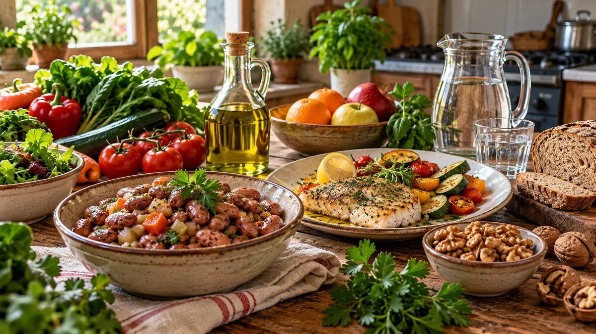

RUBRICA 08 · GUIDA 02 · PREVENZIONE CARDIOVASCOLARE · 23 OTTOBRE 2026
Dieta mediterranea e cuore: prevenzione, colesterolo, pressione e studi
Non esiste un singolo alimento che protegga da solo da infarto e ictus. Le prove riguardano soprattutto le abitudini alimentari nel loro insieme. Questa guida spiega che cosa è sostenuto da ricerche e raccomandazioni, e come distinguere una probabilità media da una promessa individuale.

La dieta mediterranea può far parte della prevenzione cardiovascolare insieme ad attività fisica appropriata, non fumo, controlli e terapie prescritte. Chi ha già una cardiopatia, prende anticoagulanti, usa insulina o ha una malattia renale necessita di indicazioni personalizzate: questa guida non modifica farmaci o dosi.
1. Il modello mediterraneo non è un alimento miracoloso
Verdura e frutta varia, legumi, cereali preferibilmente integrali, frutta secca e semi, grassi insaturi al posto di una parte dei grassi saturi e un uso ragionato di olio d'oliva formano un modello alimentare. Pesce e altre fonti proteiche completano la varietà. La scelta deve tenere conto di allergie, condizioni cliniche, costi e disponibilità.
La dichiarazione scientifica American Heart Association (AHA) del 31 marzo 2026 invita a concentrarsi sul modello globale, non su un prodotto isolato: verdura, frutta, cereali integrali, proteine appropriate, grassi insaturi, meno sale e bevande zuccherate.
2. Che cosa mostrano gli studi?
Nel trial PREDIMED, svolto in Spagna su persone ad alto rischio cardiovascolare senza una precedente malattia cardiovascolare al reclutamento, un modello mediterraneo con olio extravergine o frutta secca è stato confrontato con una dieta di controllo. Nel rapporto rianalizzato e ripubblicato nel 2018, l'esito combinato di infarto, ictus o morte cardiovascolare si è verificato meno frequentemente nei due gruppi mediterranei. Questo non dimostra che l'olio o le noci, da soli, sostituiscano la prevenzione clinica.
La correzione metodologica conta: l'articolo originale del 2013 fu ritirato perché non tutte le assegnazioni avevano seguito una randomizzazione individuale corretta. La pubblicazione del 2018 ha rianalizzato i dati tenendo conto di questi problemi; chi racconta lo studio senza menzionarli dà un quadro incompleto. Inoltre, il beneficio osservato nell'esito combinato era trainato soprattutto dalla riduzione degli ictus: nello studio non è stata dimostrata una riduzione statisticamente significativa, presa singolarmente, di infarto o mortalità complessiva. Anche l'interruzione anticipata del trial richiede prudenza nell'interpretazione dell'entità del beneficio. Analisi critica metodologica, BMJ 2019.
Nel lavoro rianalizzato, i rischi assoluti stimati a cinque anni dell'esito principale erano 5,7% nel gruppo di controllo, 3,6% nel gruppo mediterraneo con olio e 4,0% in quello con frutta secca. Sono stime di quel contesto di studio, non percentuali da applicare automaticamente alle persone che leggono Per Me. Fonte: NEJM, PREDIMED, rianalisi 2018.
3. Pressione arteriosa e sale: cosa cambia a tavola
Ridurre il sale in eccesso è un intervento con basi scientifiche per il controllo della pressione. Non basta evitare il sale aggiunto: può essere presente anche in salumi, formaggi, alimenti confezionati, pane e preparati per brodo. Usare erbe aromatiche e spezie può aiutare a dare sapore senza aumentare il sale.
L'OMS indica per la popolazione adulta generale meno di 5 g di sale al giorno, equivalente a circa 2 g di sodio. Non è un obiettivo individuale per ogni condizione clinica: in alcune malattie può servire una valutazione specifica con i curanti.
4. Colesterolo: conta il tipo di grassi, non soltanto la quantità
L'AHA 2026 raccomanda di scegliere fonti di grassi insaturi in sostituzione di fonti ricche di grassi saturi. L'olio extravergine d'oliva può far parte di questo schema: è però calorico, e non diventa «libero» perché è un grasso favorevole.
Frutta secca e semi possono essere utili nel modello complessivo, ma vanno considerati nel totale calorico e nelle allergie. È scorretto concludere che consumare più olio o noci possibile offra protezione crescente. La raccomandazione ADA 2026 n. 5.31 invita le persone con diabete a limitare alimenti molto ricchi di grassi saturi per ridurre il rischio cardiovascolare.
5. Diabete tipo 2: modello alimentare e controllo glicemico
Le raccomandazioni ADA 2026 n. 5.29–5.30 sostengono più fonti proteiche vegetali e la considerazione di elementi del modello mediterraneo: evidenza di grado A per ridurre il rischio cardiovascolare e B per migliorare il metabolismo del glucosio. Non significa una cura unica, né rende superflui farmaci e controlli.
I carboidrati dei legumi, dei cereali e della frutta restano da considerare, soprattutto con insulina. Una guida alimentare non può stabilire dosi individuali o dire di sospendere medicinali dopo un miglioramento dei valori glicemici.
6. Tre affermazioni da non confondere con prove
| Affermazione | Che cosa possiamo dire |
|---|---|
| «L'olio d'oliva impedisce l'infarto» | No: può far parte di un modello alimentare favorevole, ma non garantisce la prevenzione. |
| «Se la dieta va bene, il colesterolo non va più controllato» | No: controlli e terapia dipendono dal rischio e dalle indicazioni cliniche. |
| «Una persona che ha già avuto un infarto avrà lo stesso beneficio del gruppo PREDIMED» | No: lo studio riguardava la prevenzione primaria in persone ad alto rischio, non prova da solo un effetto identico nella prevenzione secondaria. |
7. Verifica di comprensione
Leggi questa frase: «Nel PREDIMED il rischio relativo era più basso; dunque ogni persona avrà il 30% di probabilità in meno di avere un infarto». Che cosa c'è di sbagliato?
Mostra la risposta e la spiegazione
Si applica impropriamente a ogni individuo una stima statistica ottenuta in uno studio con un determinato gruppo di persone, oltre a trasformare l'esito combinato di diversi eventi nella sola probabilità di infarto. La decisione personale va discussa con i curanti.
8. Mangiare meglio senza spendere inutilmente
Legumi secchi o in conserva scolati, verdure surgelate, ortaggi di stagione e cereali semplici possono rientrare nel modello mediterraneo. Confronta sempre prezzo per peso consumabile, contenuto di sale e possibilità di conservazione. Il marchio «mediterraneo» non certifica una migliore composizione.
La rubrica pubblicherà ricette complete con quantità in grammi e carboidrati disponibili (g) e calorie (kcal) per porzione, calcolati e verificabili da tabelle di composizione o etichette, senza usare valori inventati. Consulta anche la sezione ricette e criteri nutrizionali.
Un piano alimentare appropriato è parte di una strategia più ampia. Non sostituire autonomamente antiaggreganti, statine, antipertensivi, terapie del diabete o altre cure con un cambiamento di dieta. Per indicazioni su grassi, sale e carboidrati rispetto alla propria situazione, consultare il medico o il dietista.
Fonti e limiti
Revisione documentale: 23 ottobre 2026. Le fonti seguenti sono studi e documenti scientifici originali. Non è stata svolta una revisione clinica esterna indipendente di questa guida, né una prova di comprensione con lettori reali.
- American Heart Association — Dietary Guidance to Improve Cardiovascular Health, 2026.
- American Diabetes Association — Standards of Care 2026, sezione 5, raccomandazioni 5.29–5.31.
- NEJM — PREDIMED, rapporto ritirato e ripubblicato con rianalisi nel 2018.
- BMJ 2019 — Analisi critica delle limitazioni metodologiche di PREDIMED, per distinguere gli esiti combinati dai singoli esiti.
- OMS — Healthy diet, sale e grassi saturi.
- Per Me — metodo, controllo editoriale e limiti.
Torna alla rubrica Dieta mediterranea
Vai alla pagina Facebook Per Me per scrivere
Non condividere dati sanitari o documenti personali in commenti pubblici.